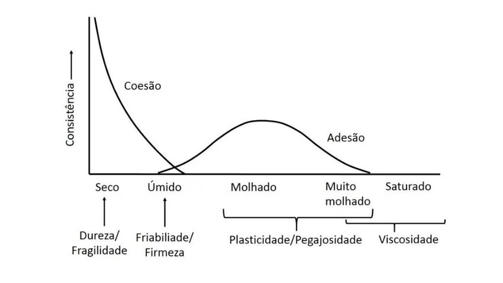
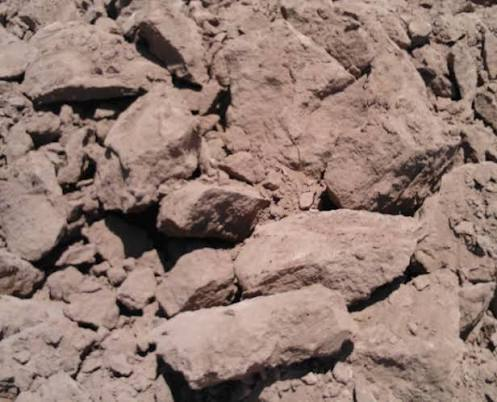
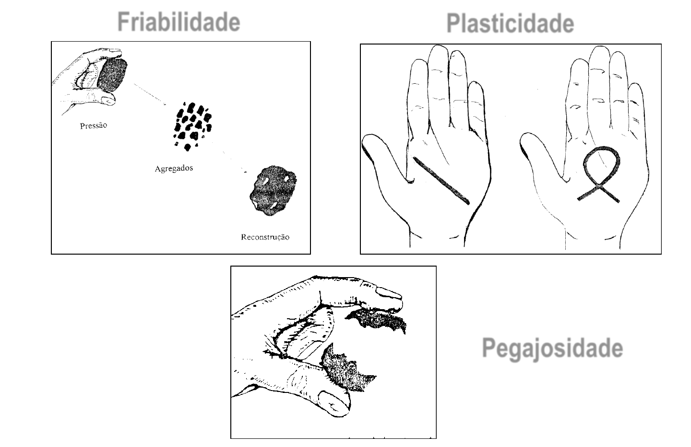
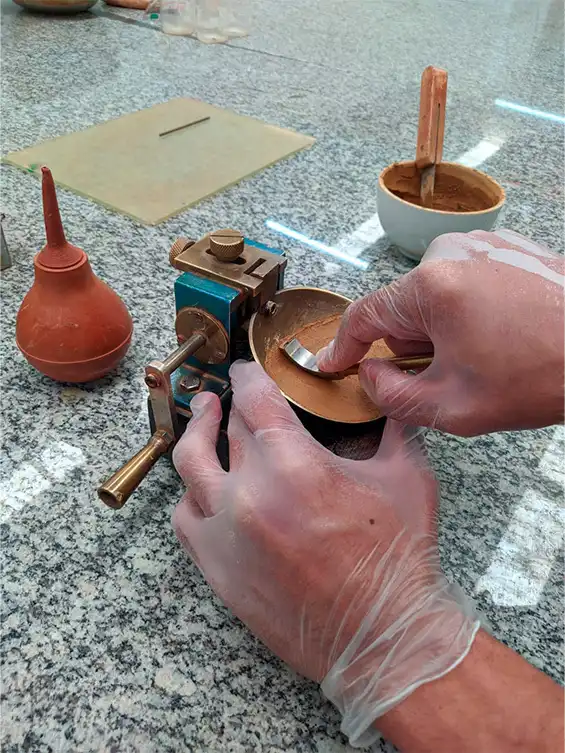
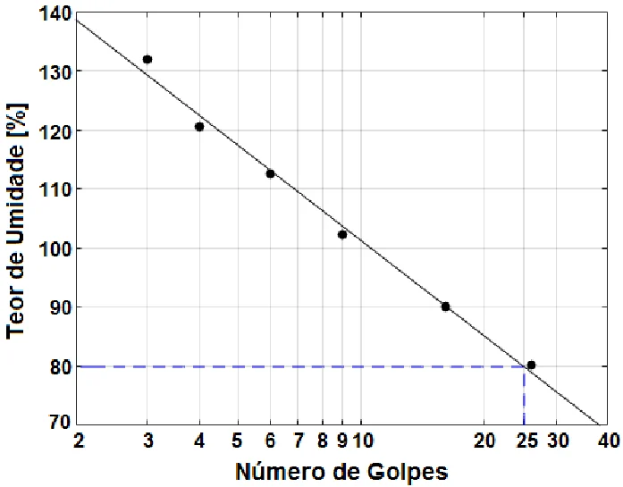
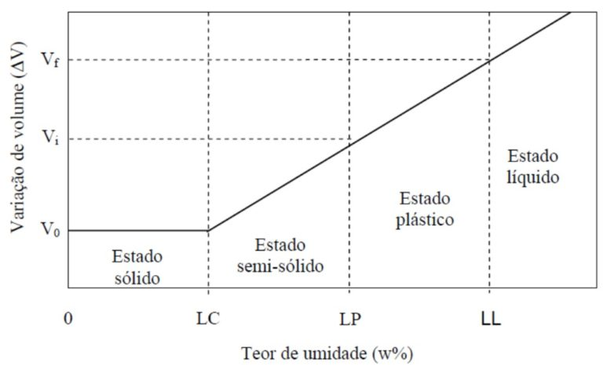
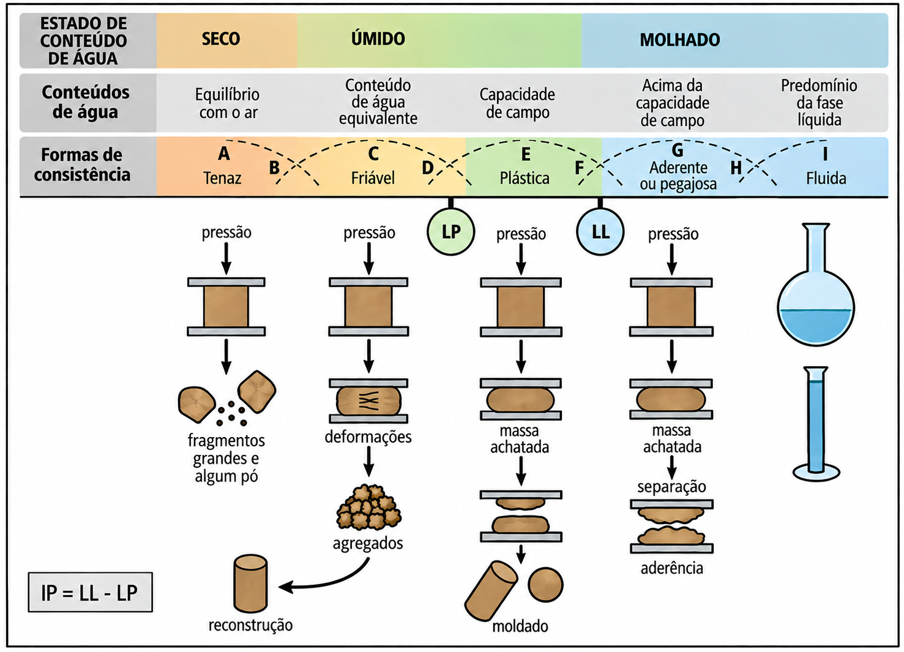

Física do Solo:
Consistência do solo
Gustavo Frosi
Instituto Federal do Paraná
Curso Superior em Engenharia Agronômica
21 de setembro de 2026
O que é consistência do solo?
Consistência do solo
O mesmo solo pode se apresentar duro, friável ou pegajoso em diferentes momentos do ano.
O que muda não é o solo, mas o seu teor de água.
A consistência descreve justamente esse comportamento.
Consistência do solo
Definição:
Consistência é a manifestação das forças físicas de coesão e adesão que atuam no solo, sob diferentes teores de umidade.
É uma propriedade dinâmica: depende da umidade no momento da avaliação.
Também é um atributo morfológico, descrito no campo horizonte por horizonte.
Por que estudar consistência?
- Define a melhor umidade para o preparo do solo;
- Indica o risco de compactação pelo tráfego de máquinas;
- Auxilia na descrição e na classificação de solos;
- Relaciona-se com a resistência à penetração das raízes;
- É base para obras de engenharia (estradas, barragens, fundações).
Coesão e adesão
Coesão e adesão
Coesão:
Atração entre partículas sólidas iguais (partícula–partícula).
- Pontes de hidrogênio e forças de van der Waals;
- Ligações por agentes cimentantes (óxidos, carbonatos, sílica);
- Pontes de matéria orgânica e de cátions.
Adesão:
Atração entre partículas sólidas e moléculas de água (sólido–líquido): depende da polaridade da água, aumenta com a ASE e é responsável pela pegajosidade nas mãos e nos implementos.
Coesão e adesão
* até um valor máximo; depois o solo passa a fluir.
Coesão e adesão

Consistência e teor de água
A consistência é descrita em três condições de umidade:
| Condição de umidade | Propriedade avaliada | Força dominante |
|---|---|---|
| Seco | Dureza (tenacidade) | Coesão |
| Úmido | Friabilidade | Coesão moderada |
| Molhado | Plasticidade e pegajosidade | Adesão |
Consistência do solo seco
Consistência do solo seco
Dureza ou tenacidade:
Resistência do agregado seco ao ar à ruptura por pressão entre o polegar e o indicador.
Reflete o predomínio das forças de coesão, já que a água praticamente não atua como lubrificante.
Avaliar em agregados de 2 a 3 cm, aplicando pressão lenta e crescente.
Consistência do solo seco
Classes de dureza:
| Classe | Critério de campo |
|---|---|
| Solta | Sem agregados coerentes (grãos simples) |
| Macia | Rompe-se com pressão muito leve dos dedos |
| Ligeiramente dura | Rompe-se facilmente entre polegar e indicador |
| Dura | Difícil de romper entre os dedos |
| Muito dura | Rompe-se apenas entre as duas mãos |
| Extremamente dura | Não se rompe entre as mãos |
Consistência do solo seco
Implicações práticas:
- Solo muito duro dificulta a emergência de plântulas (encrostamento);
- Aumenta a resistência à penetração das raízes;
- Exige maior demanda de potência no preparo;
- Favorece a formação de torrões e a pulverização de agregados.


Consistência do solo úmido
Consistência do solo úmido
Friabilidade:
Facilidade com que o solo úmido se desfaz em agregados menores quando pressionado, sem se deformar plasticamente.
É a condição de umidade ideal para o preparo do solo.
Consistência do solo úmido
Classes de friabilidade:
| Classe | Critério de campo |
|---|---|
| Solta | Não coeso, grãos simples |
| Muito friável | Esboroa-se sob pressão muito leve |
| Friável | Esboroa-se sob pressão leve a moderada |
| Firme | Esboroa-se sob pressão moderada a forte |
| Muito firme | Esboroa-se somente sob forte pressão |
| Extremamente firme | Não se esboroa entre os dedos |
Consistência do solo úmido
Faixa friável:
Situa-se aproximadamente entre a capacidade de campo e o limite de plasticidade.
- O solo se fragmenta sem se deformar;
- Menor energia de tração exigida;
- Menor risco de compactação e de pulverização;
- Maior eficiência operacional das máquinas.
Consistência do solo úmido
A amplitude da faixa friável varia entre solos:
- Solos arenosos: faixa ampla, pouco sensível ao manejo;
- Latossolos argilosos (caulinita e óxidos): faixa relativamente ampla;
- Vertissolos (argila 2:1): faixa muito estreita, manejo crítico.
Consistência do solo molhado
Consistência do solo molhado
Plasticidade:
Capacidade do solo molhado de ser moldado e de manter a forma após cessar a força aplicada.
Depende do teor de argila e da orientação das partículas lamelares lubrificadas pela água.
Areias puras são não plásticas.
Consistência do solo molhado
Classes de plasticidade:
| Classe | Critério de campo |
|---|---|
| Não plástico | Não forma cilindro (rolo) |
| Ligeiramente plástico | Forma cilindro que se rompe facilmente |
| Plástico | Forma cilindro que resiste à deformação |
| Muito plástico | Cilindro firme, exige pressão considerável |
Teste do rolo: cilindro de ~3 a 4 cm de comprimento e ~3 mm de diâmetro.
Consistência do solo molhado
Pegajosidade (aderência):
Capacidade do solo molhado de aderir a outros corpos: dedos, ferramentas, pneus, discos de grade.
| Classe | Critério de campo |
|---|---|
| Não pegajoso | Não adere aos dedos |
| Ligeiramente pegajoso | Adere pouco e solta-se com facilidade |
| Pegajoso | Adere a ambos os dedos e estira-se um pouco |
| Muito pegajoso | Adere fortemente e estira-se bastante |
Consistência do solo molhado
Cuidados na avaliação:
- Destorroar a amostra e retirar fragmentos grosseiros;
- Umedecer gradualmente até o ponto de máxima plasticidade;
- Não avaliar com excesso de água (o solo passa a fluir);
- Padronizar a pressão entre polegar e indicador.
Consistência do solo molhado

Limites de consistência
Limites de consistência
Limites de Atterberg:
Propostos por Albert Atterberg para a cerâmica e a agricultura e depois adaptados por Arthur Casagrande para a mecânica dos solos.
Definem os teores de água que separam os estados de consistência do solo:
- Sólido;
- Semissólido;
- Plástico;
- Líquido (viscoso).
Limites de consistência
| Limite | Sigla | Transição |
|---|---|---|
| Limite de contração | LC | Sólido → semissólido |
| Limite de plasticidade | LP | Semissólido → plástico |
| Limite de liquidez | LL | Plástico → líquido |
Podem ser encontrados em teor de água gravimétrico (%). No entanto, é recomendado não utilizar unidades.
Limites de consistência
Limite de contração (LC):
Teor de água abaixo do qual a perda de água não provoca mais redução de volume do solo.
- Abaixo do LC o ar entra nos poros e o solo clareia;
- Relaciona-se com a formação de fendas de dessecação;
- Importante em Vertissolos e em solos com argila 2:1.
Limites de consistência
Limite de plasticidade (LP):
Menor teor de água em que o solo ainda se comporta plasticamente.
Determinação: teor de água no qual o cilindro de 3 mm de diâmetro começa a se fragmentar ao ser rolado sobre placa de vidro.
Limite de liquidez (LL):
Teor de água a partir do qual o solo perde a capacidade de manter a forma e escoa como um líquido viscoso.
Determinação no aparelho de Casagrande: teor de água em que a ranhura se fecha em 1 cm após 25 golpes.
Limites de consistência
Limite de liquidez (LL):


Limites de consistência
Índice de plasticidade (IP):
\[ IP = LL - LP \]
Representa a amplitude do estado plástico, ou seja, a faixa de umidade em que o solo pode ser moldado.
Quanto maior o IP, mais crítico é o manejo hídrico do solo.
Limites de consistência
Interpretação do IP:
| IP (%) | Classificação | Tipo de solo |
|---|---|---|
| 0 | Não plástico | Arenoso |
| < 7 | Fracamente plástico | Siltoso |
| 7 – 17 | Medianamente plástico | Argilo siltoso |
| > 17 | Altamente plástico | Argiloso |
Limites de consistência
Volume:

Limites de consistência
Resumo:

Limites de consistência
Aplicações:
- Classificação geotécnica de solos;
- Projeto de estradas rurais e de barragens de terra;
- Estimativa da trafegabilidade em áreas agrícolas;
- Definição da janela operacional de preparo;
- Avaliação do risco de compactação.
Fatores que influenciam a consistência
Fatores que influenciam
- Textura;
- Mineralogia da fração argila;
- Matéria orgânica;
- Cátions trocáveis;
- Óxidos de Fe e Al e outros cimentantes;
- Estrutura e densidade do solo.
Fatores que influenciam
Textura:
- Quanto maior o teor de argila, maior a ASE e o número de pontos de contato;
- Maior coesão no seco e maior plasticidade e pegajosidade no molhado;
- Solos arenosos: soltos quando secos, não plásticos e não pegajosos;
- O silte contribui pouco para a plasticidade, mas favorece o encrostamento.
| Classe textural | Dureza (seco) | Friabilidade | Plasticidade |
|---|---|---|---|
| Arenosa | Solta / macia | Solta | Não plástica |
| Média | Lig. dura | Friável | Lig. plástica |
| Argilosa | Dura | Firme | Plástica |
| Muito argilosa | Muito dura | Muito firme | Muito plástica |
Fatores que influenciam
Mineralogia:
Argilas 2:1 expansivas (esmectita, vermiculita): alta ASE, alta plasticidade, alto LL e alto IP, forte expansão e contração.
Argilas 1:1 (caulinita): baixa ASE, baixa plasticidade, comportamento mais estável com a variação da umidade.
Fatores que influenciam
Matéria orgânica:
- Aumenta a agregação e a friabilidade;
- Reduz a dureza no estado seco;
- Amplia a faixa de umidade friável;
- Em teores elevados, pode aumentar o LL e o LP;
- Reduz a pegajosidade em relação a um solo argiloso sem matéria orgânica.
Fatores que influenciam
Cátions trocáveis:
O tipo de cátion adsorvido altera a espessura da dupla camada difusa.
- Ca2+ e Mg2+: floculam e reduzem a plasticidade;
- Na+: dispersa e aumenta muito a plasticidade e a pegajosidade;
- Solos sódicos: extremamente duros quando secos e muito plásticos quando molhados.
Fatores que influenciam
Cimentantes, estrutura e densidade:
- Óxidos de Fe e Al aumentam a agregação e reduzem a plasticidade;
- Carbonatos e sílica podem cimentar horizontes (fragipã, duripã);
- Solos bem estruturados são mais friáveis;
- O aumento da densidade eleva a dureza e a resistência à penetração;
- Horizontes coesos: duros quando secos e friáveis quando úmidos.
Consistência e manejo do solo
Consistência e manejo
A questão central:
Qual é o momento certo de entrar na lavoura com as máquinas?
Resposta: quando o solo está na faixa friável, abaixo do limite de plasticidade.
Consistência e manejo
Preparo com o solo molhado:
- Deformação plástica e compactação;
- Formação de pé de grade ou pé de arado;
- Espelhamento da camada subsuperficial;
- Redução da macroporosidade e da infiltração;
- Restrição ao crescimento radicular.
Consistência e manejo
Preparo com o solo muito seco:
- Formação de torrões grandes;
- Pulverização excessiva da camada superficial;
- Maior consumo de combustível e desgaste dos implementos;
- Maior risco de erosão eólica e hídrica.
Consistência e manejo
Testes práticos de campo:
- Coletar solo na profundidade de trabalho;
- Bolinha que se molda e deforma → solo muito úmido, não trabalhar;
- Torrão que esboroa sob leve pressão → solo friável, momento adequado;
- Torrão duro que não se desfaz → solo muito seco;
- Cilindro de 3 mm que não rompe → solo acima do limite de plasticidade.
Consistência e manejo
Trafegabilidade:
- Solos com alto IP têm janela operacional estreita;
- Pressão de inflação dos pneus e carga por eixo são determinantes;
- O tráfego controlado reduz a área compactada;
- O plantio direto, com cobertura permanente, amortece a pressão aplicada.
Formação do pé de arado e compactação do solo!